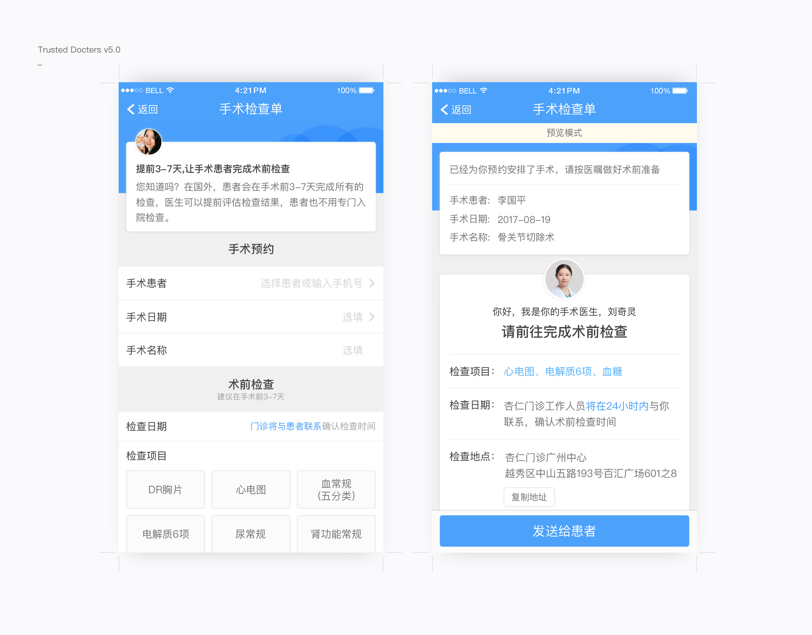

项目背景
从2016年开始我在杏仁医生工作，主要负责移动端应用的设计，先后完成了杏仁医生 APP 以及与杏仁门诊相关的产品线的设计工作，现在APP已经迭代到了5.6版本。
在2017年移动应用和线下医疗空间的整合过程中，我们探索如何让医生更好的进行多点执业，打通线上线下，以此为目标迭代移动端应用，同时也落实到医用商用物料以及门诊建筑空间的设计中。这种线上线下结合的设计，使得产品更为立体，也让商业实施更有效率。最后产出了移动端APP迭代版本，门诊HIS系统，线下物料，门诊建筑空间等。
杏仁医生 APP，这是一款针对医生开发的手机应用程序，目的是建立医生执业的平台。众所周知，主流的医疗应用切入端是患者，而我们认为医生才是核心资源。最大化的帮助医生，才能更好的帮助患者。我们通过核心医生用户调研反馈，以用户行为为基础并围绕医学专业、用户体验2个关键点，不断产出包括主视觉、图标、色彩指南、按钮和交互方式在内的产品优化方案。
在迭代过程中我们面临了许多问题，有历史积累的，也有产品迭代中产生的新问题。
• 功能复杂，界面不直观，用户较难使用；
• 用户认为字号小，医生用户年龄偏大看不清；
• 医学专业性的功能定制；
• 样式多样，消息提示不友好，体验不流畅。
所以我们希望不断去修复这些问题，给用户一个流畅的体验。
现代简洁的界面风格以及优雅明快的色调选取既保证了专业性，也增强了温度感。大部分医生年龄偏大，对应用有更顺畅的体验要求，对于使用应用中经常出现的提示，我们修改了之前的错误提示方案，结合iOS 和安卓规范进行了修正，使之更为友好和流畅。
在2017年的业务中，我们新增了自建的线下门诊给医生提供除供职医院外的的诊疗空间，当医生使用门诊出诊时需要预定时间，所以希望做出相应的设计，使得医生可以方便的在需要的时间预约相应的诊室。
难点在于诊室会有时间段被其他医生占用，如何将选择出诊时间可视化的呈现是我们设计考虑的重点，所以我们从下面2个角度来进行这次设计。

选择诊室的时间的控件经过了很多设计稿的测试，需要考虑到被占用不能选时间段但可以操作前后的时间点的限制情况，我们最后选择了体验最好的一种方式，而且希望把现在设置的时间写在弹窗上，给医生用户更多的提示，减少客服及顾问的工作量。这个时间选择的功能得到了很好的使用反馈。
医生主要通过问诊表、随访计划、患教资料等这些工具来进行患者管理。
随访计划，给医生提供可编辑的随访模版，可以发给诊后及术后的患者，极大提高了医患之间的沟通效率。这里在符合医学内容需求的条件下，进行了专业化的界面设计，确保易用性。


在没有数据之前，做过一次设计迭代，优化的是视觉元素，包括元素，图标的视觉平衡等内容。
而有了数据之后的设计会针对用户行为作出更佳的解决方案，我们调出了医生在标题处使用标签的频次，发现4个频率非常低，于是保留了2个较高使用频率的词条，同时增加了一个医生上一次填写记录的词条，并且优化了交互流程，改为输入中快捷输入的模式，进一步提升了可用性。
在病人的信息中，我们集合了对病人的各种问诊信息，包含了诊断、用药、填写的问诊表，诊疗记录，这些信息能够帮助医生在长期跟踪了解病人的情况。
病历系统需要整合的数据比较复杂，要将用药、诊疗记录、问诊表的内容采用统一的格式显示到同个页面中，这些内容的详情都是不同类型的格式，有图文、有的有标题，选项，结论，评分等等，我们通过对内容分类，分优先级等方式，设置标签来统一格式，如time、tab、url、title、summary、key、value，根据此来进行布局。

最后呈现在病人的信息资料中
更多的设计产出
